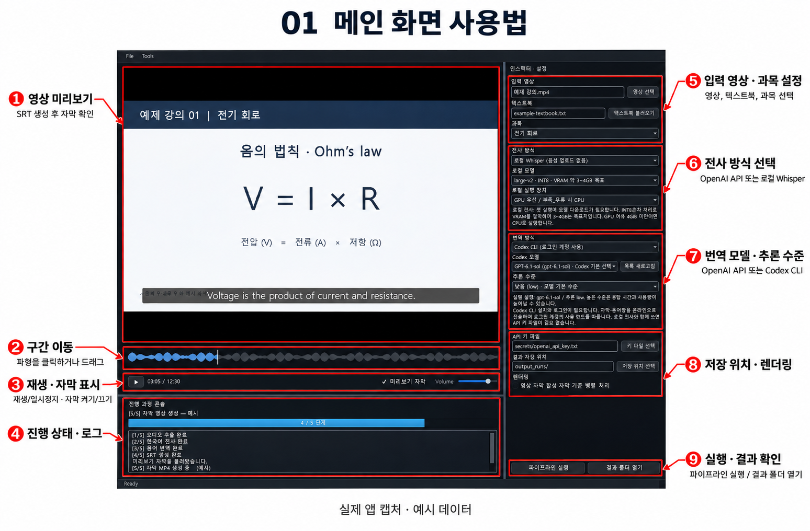
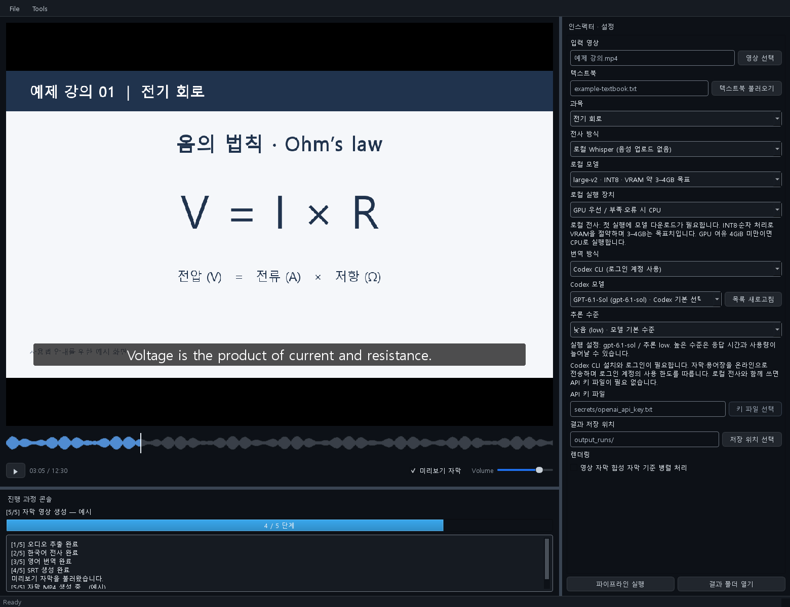
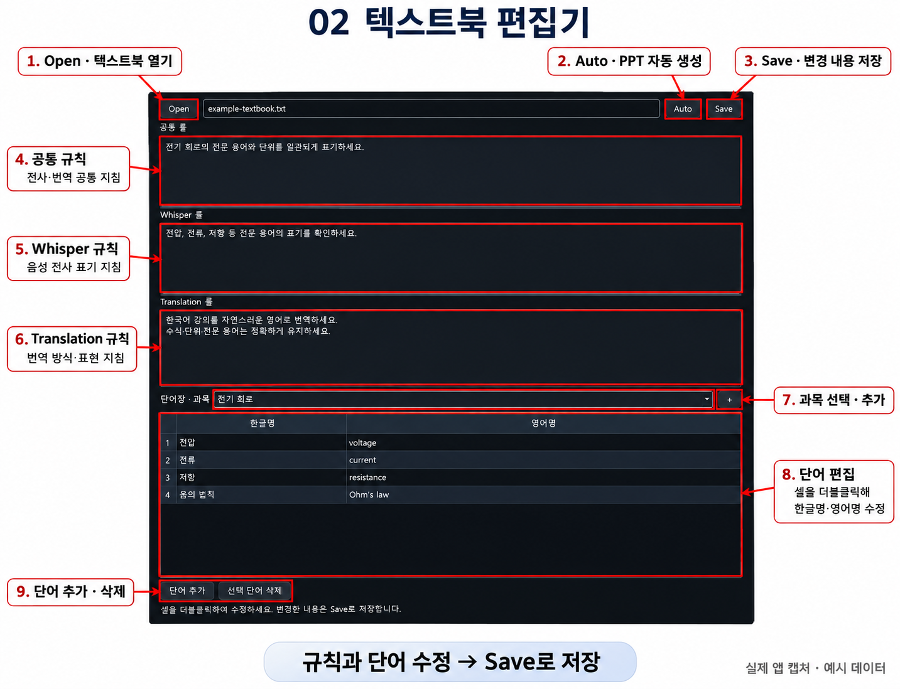
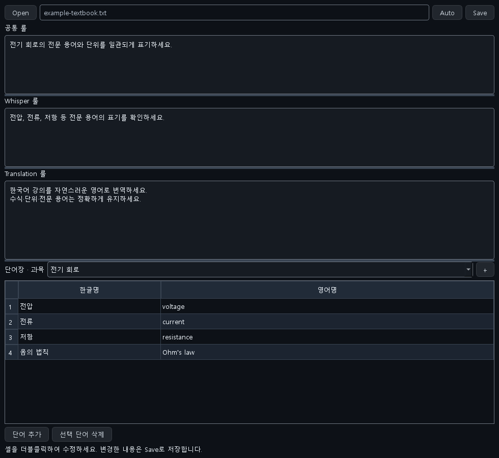
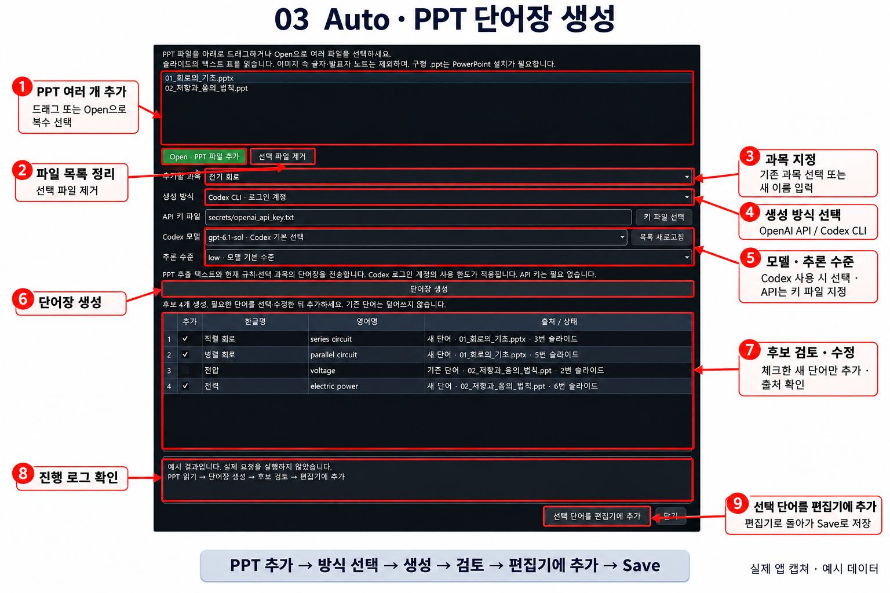
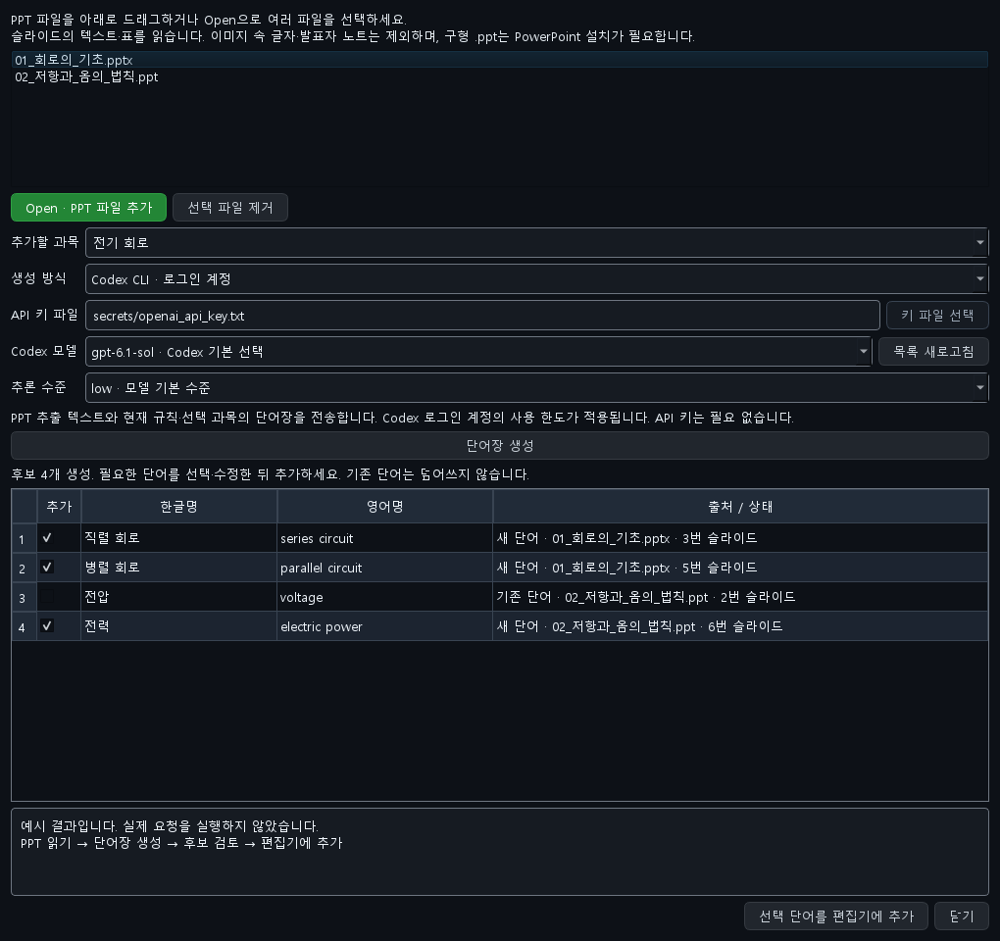

① 메인 화면
영상 선택 → 텍스트북 불러오기 → 과목 선택 → 전사·번역 방식 설정 → 파이프라인 실행

- 오른쪽에서 영상, 텍스트북 파일과 사용할 과목을 선택합니다.
- 전사는 OpenAI API 또는 로컬 Whisper, 번역은 OpenAI API 또는 Codex CLI를 선택합니다. Codex는 모델과 추론 수준도 선택합니다.
- API를 사용하는 경우 키 파일을 지정합니다. 저장 위치와 병렬 렌더링 옵션을 확인한 뒤 파이프라인 실행을 누릅니다.
- 진행 상태는 왼쪽 아래 콘솔에서 확인합니다. SRT 생성 후에는 인코딩 중에도 미리보기 자막을 볼 수 있습니다.
- 파형 클릭·드래그로 구간을 이동하고, 미리보기 자막 체크박스로 표시를 켜고 끕니다. 완료 후 결과 폴더 열기에서 SRT와 MP4를 확인합니다.
영상/콘솔과 설정창 사이의 경계선을 드래그하면 영역 크기를 조절할 수 있습니다. 텍스트북 편집기는 Tools → 텍스트북 편집기 또는 Ctrl+Shift+T로 엽니다.
주석 없는 실제 캡처 보기

② 텍스트북 편집기
Open → 규칙·과목·단어 편집 → Save

- Open으로 텍스트북 TXT를 엽니다. 새 파일은 규칙·과목·단어를 작성한 후 Save에서 저장 위치를 지정합니다.
- 공통 룰은 공통 지침, Whisper 룰은 전사 지침, Translation 룰은 번역 지침입니다.
- 과목을 선택하거나 +로 새 과목을 추가합니다. 단어 셀을 더블클릭해 한글명과 영어명을 수정합니다.
- 단어 추가로 행을 만들고, 행을 선택한 뒤 선택 단어 삭제로 제거합니다.
- Auto는 PPT 자동 단어장 생성 창을 엽니다. 직접 편집하거나 Auto로 추가한 내용은 Save로 저장해야 파일에 반영됩니다.
주석 없는 실제 캡처 보기

③ Auto · PPT 단어장 생성
PPT 추가 → 과목·생성 방식 선택 → 생성 → 검토·수정 → 편집기에 추가 → Save

- PPT/PPTX 여러 개를 목록으로 드래그하거나 Open · PPT 파일 추가로 선택합니다. 불필요한 파일은 선택 후 제거합니다.
- 기존 과목을 선택하거나 새 과목명을 입력합니다. 선택한 파일들은 한 과목의 단어장으로 모입니다.
- OpenAI API는 API 키 파일을 지정하고, Codex CLI는 로그인 계정의 모델과 추론 수준을 선택합니다.
- 단어장 생성을 누르고 진행 로그를 확인합니다. 현재 규칙·기존 단어를 참고해 후보를 생성합니다.
- 후보의 한글명·영어명을 수정하고 필요한 단어만 체크합니다. 출처는 오른쪽 열에서 확인하며, 긴 내용은 마우스를 올려 봅니다. 기존 단어와 충돌 후보는 기본 선택에서 제외됩니다.
- 선택 단어를 편집기에 추가를 누른 뒤, 편집기로 돌아가 Save로 저장합니다. Auto 창의 추가 버튼 자체는 파일을 저장하지 않습니다.
PPTX는 직접 읽으며 구형 PPT에는 설치된 PowerPoint가 필요합니다. 이미지 속 글자(OCR)와 발표자 노트는 추출하지 않습니다. 생성 시 추출 텍스트와 규칙·기존 단어를 선택한 서비스에 전송하며, API 요금 또는 Codex 계정의 사용 한도가 적용됩니다.
주석 없는 실제 캡처 보기
